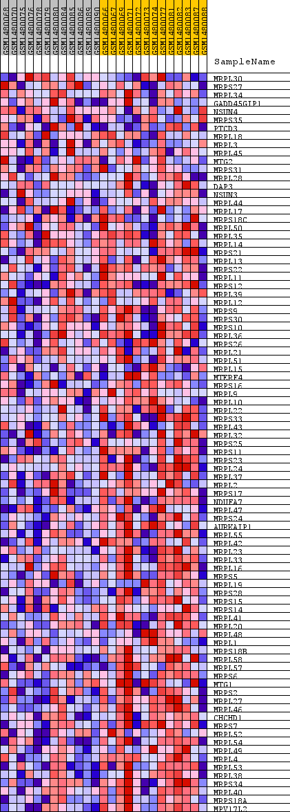
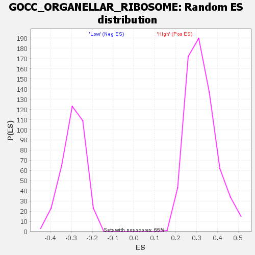

Profile of the Running ES Score & Positions of GeneSet Members on the Rank Ordered List
| Dataset | WG6v3.CYGB.cls#High_versus_Low.CYGB.cls#High_versus_Low_repos |
| Phenotype | CYGB.cls#High_versus_Low_repos |
| Upregulated in class | Low |
| GeneSet | GOCC_ORGANELLAR_RIBOSOME |
| Enrichment Score (ES) | -0.6000897 |
| Normalized Enrichment Score (NES) | -2.0602078 |
| Nominal p-value | 0.0 |
| FDR q-value | 0.01298781 |
| FWER p-Value | 0.013 |
| SYMBOL | TITLE | RANK IN GENE LIST | RANK METRIC SCORE | RUNNING ES | CORE ENRICHMENT | |
|---|---|---|---|---|---|---|
| 1 | MRPL30 | MRPL30 | 1945 | 0.060 | -0.0819 | No |
| 2 | MRPS27 | MRPS27 | 4219 | 0.021 | -0.1928 | No |
| 3 | MRPL34 | MRPL34 | 4661 | 0.018 | -0.2101 | No |
| 4 | GADD45GIP1 | GADD45GIP1 | 4945 | 0.015 | -0.2199 | No |
| 5 | NSUN4 | NSUN4 | 5772 | 0.010 | -0.2594 | No |
| 6 | MRPS35 | MRPS35 | 5933 | 0.010 | -0.2646 | No |
| 7 | PTCD3 | PTCD3 | 6026 | 0.009 | -0.2664 | No |
| 8 | MRPL18 | MRPL18 | 6146 | 0.009 | -0.2698 | No |
| 9 | MRPL3 | MRPL3 | 6411 | 0.008 | -0.2811 | No |
| 10 | MRPL45 | MRPL45 | 6915 | 0.006 | -0.3054 | No |
| 11 | MTG2 | MTG2 | 7325 | 0.004 | -0.3253 | No |
| 12 | MRPS31 | MRPS31 | 8760 | -0.001 | -0.3992 | No |
| 13 | MRPL28 | MRPL28 | 8892 | -0.001 | -0.4057 | No |
| 14 | DAP3 | DAP3 | 9355 | -0.003 | -0.4287 | No |
| 15 | NSUN3 | NSUN3 | 9420 | -0.003 | -0.4312 | No |
| 16 | MRPL44 | MRPL44 | 10487 | -0.007 | -0.4843 | No |
| 17 | MRPL17 | MRPL17 | 10694 | -0.007 | -0.4927 | No |
| 18 | MRPS18C | MRPS18C | 11099 | -0.009 | -0.5108 | No |
| 19 | MRPL50 | MRPL50 | 11961 | -0.012 | -0.5516 | No |
| 20 | MRPL35 | MRPL35 | 12439 | -0.014 | -0.5719 | No |
| 21 | MRPL14 | MRPL14 | 12681 | -0.015 | -0.5795 | No |
| 22 | MRPS21 | MRPS21 | 12793 | -0.016 | -0.5803 | No |
| 23 | MRPL13 | MRPL13 | 12797 | -0.016 | -0.5755 | No |
| 24 | MRPS22 | MRPS22 | 12911 | -0.016 | -0.5762 | No |
| 25 | MRPL11 | MRPL11 | 13041 | -0.017 | -0.5776 | No |
| 26 | MRPS12 | MRPS12 | 13477 | -0.020 | -0.5940 | Yes |
| 27 | MRPL39 | MRPL39 | 13539 | -0.020 | -0.5909 | Yes |
| 28 | MRPL12 | MRPL12 | 13552 | -0.020 | -0.5852 | Yes |
| 29 | MRPS9 | MRPS9 | 13622 | -0.021 | -0.5824 | Yes |
| 30 | MRPS30 | MRPS30 | 13624 | -0.021 | -0.5760 | Yes |
| 31 | MRPS10 | MRPS10 | 13726 | -0.021 | -0.5746 | Yes |
| 32 | MRPL36 | MRPL36 | 13812 | -0.022 | -0.5722 | Yes |
| 33 | MRPS26 | MRPS26 | 13996 | -0.023 | -0.5745 | Yes |
| 34 | MRPL21 | MRPL21 | 14022 | -0.023 | -0.5685 | Yes |
| 35 | MRPL51 | MRPL51 | 14124 | -0.024 | -0.5663 | Yes |
| 36 | MRPL15 | MRPL15 | 14151 | -0.024 | -0.5601 | Yes |
| 37 | MTERF4 | MTERF4 | 14233 | -0.025 | -0.5566 | Yes |
| 38 | MRPS16 | MRPS16 | 14354 | -0.026 | -0.5549 | Yes |
| 39 | MRPL9 | MRPL9 | 14412 | -0.026 | -0.5497 | Yes |
| 40 | MRPL10 | MRPL10 | 14469 | -0.026 | -0.5444 | Yes |
| 41 | MRPL22 | MRPL22 | 14661 | -0.028 | -0.5455 | Yes |
| 42 | MRPS33 | MRPS33 | 14685 | -0.028 | -0.5379 | Yes |
| 43 | MRPL43 | MRPL43 | 14880 | -0.030 | -0.5387 | Yes |
| 44 | MRPL32 | MRPL32 | 14886 | -0.030 | -0.5297 | Yes |
| 45 | MRPS25 | MRPS25 | 14991 | -0.031 | -0.5255 | Yes |
| 46 | MRPS11 | MRPS11 | 15078 | -0.031 | -0.5201 | Yes |
| 47 | MRPS23 | MRPS23 | 15094 | -0.032 | -0.5111 | Yes |
| 48 | MRPL24 | MRPL24 | 15341 | -0.034 | -0.5133 | Yes |
| 49 | MRPL37 | MRPL37 | 15352 | -0.034 | -0.5033 | Yes |
| 50 | MRPL2 | MRPL2 | 15370 | -0.034 | -0.4936 | Yes |
| 51 | MRPS17 | MRPS17 | 15662 | -0.037 | -0.4973 | Yes |
| 52 | NDUFA7 | NDUFA7 | 15708 | -0.037 | -0.4880 | Yes |
| 53 | MRPL47 | MRPL47 | 15857 | -0.039 | -0.4836 | Yes |
| 54 | MRPS24 | MRPS24 | 15858 | -0.039 | -0.4716 | Yes |
| 55 | AURKAIP1 | AURKAIP1 | 15921 | -0.039 | -0.4626 | Yes |
| 56 | MRPL55 | MRPL55 | 15969 | -0.040 | -0.4526 | Yes |
| 57 | MRPL42 | MRPL42 | 16004 | -0.040 | -0.4418 | Yes |
| 58 | MRPL23 | MRPL23 | 16080 | -0.041 | -0.4328 | Yes |
| 59 | MRPL33 | MRPL33 | 16247 | -0.043 | -0.4280 | Yes |
| 60 | MRPL16 | MRPL16 | 16354 | -0.044 | -0.4196 | Yes |
| 61 | MRPS5 | MRPS5 | 16357 | -0.044 | -0.4058 | Yes |
| 62 | MRPL19 | MRPL19 | 16408 | -0.045 | -0.3944 | Yes |
| 63 | MRPS28 | MRPS28 | 16424 | -0.045 | -0.3811 | Yes |
| 64 | MRPS15 | MRPS15 | 16429 | -0.045 | -0.3672 | Yes |
| 65 | MRPS14 | MRPS14 | 16467 | -0.046 | -0.3548 | Yes |
| 66 | MRPL41 | MRPL41 | 16534 | -0.047 | -0.3437 | Yes |
| 67 | MRPL20 | MRPL20 | 16646 | -0.048 | -0.3344 | Yes |
| 68 | MRPL48 | MRPL48 | 16726 | -0.049 | -0.3231 | Yes |
| 69 | MRPL1 | MRPL1 | 16816 | -0.051 | -0.3119 | Yes |
| 70 | MRPS18B | MRPS18B | 16832 | -0.051 | -0.2969 | Yes |
| 71 | MRPL58 | MRPL58 | 16868 | -0.051 | -0.2828 | Yes |
| 72 | MRPL57 | MRPL57 | 16978 | -0.053 | -0.2720 | Yes |
| 73 | MRPS6 | MRPS6 | 17044 | -0.053 | -0.2587 | Yes |
| 74 | MTG1 | MTG1 | 17075 | -0.054 | -0.2435 | Yes |
| 75 | MRPS2 | MRPS2 | 17445 | -0.061 | -0.2436 | Yes |
| 76 | MRPL27 | MRPL27 | 17497 | -0.062 | -0.2270 | Yes |
| 77 | MRPL46 | MRPL46 | 17510 | -0.062 | -0.2083 | Yes |
| 78 | CHCHD1 | CHCHD1 | 17544 | -0.063 | -0.1905 | Yes |
| 79 | MRPS7 | MRPS7 | 17557 | -0.063 | -0.1716 | Yes |
| 80 | MRPL52 | MRPL52 | 17664 | -0.065 | -0.1567 | Yes |
| 81 | MRPL54 | MRPL54 | 17725 | -0.067 | -0.1390 | Yes |
| 82 | MRPL49 | MRPL49 | 17756 | -0.067 | -0.1195 | Yes |
| 83 | MRPL4 | MRPL4 | 18002 | -0.074 | -0.1092 | Yes |
| 84 | MRPL53 | MRPL53 | 18098 | -0.077 | -0.0902 | Yes |
| 85 | MRPL38 | MRPL38 | 18203 | -0.080 | -0.0706 | Yes |
| 86 | MRPS34 | MRPS34 | 18211 | -0.081 | -0.0458 | Yes |
| 87 | MRPL40 | MRPL40 | 18604 | -0.098 | -0.0356 | Yes |
| 88 | MRPS18A | MRPS18A | 18877 | -0.117 | -0.0131 | Yes |
| 89 | MPV17L2 | MPV17L2 | 19009 | -0.132 | 0.0214 | Yes |

